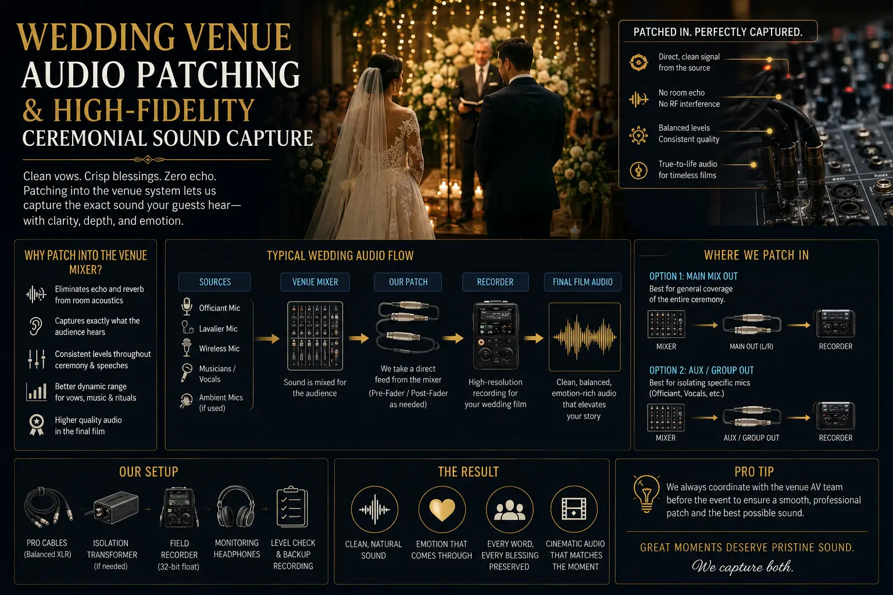
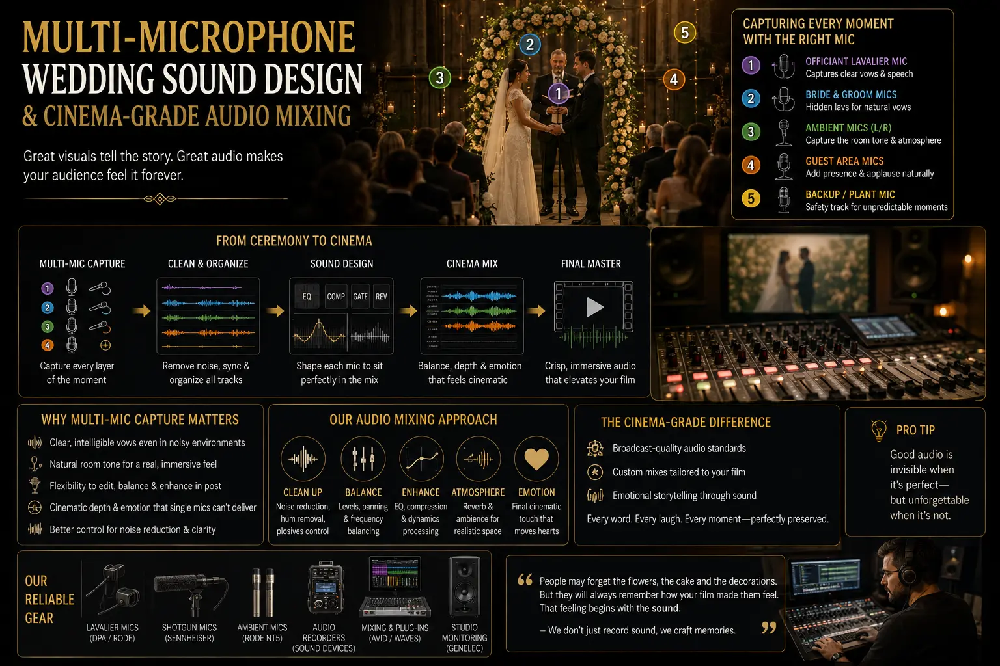

Why Patching Into the Venue Mixer Prevents Echo and Muffled Vows in Wedding Films
The Audio Problem That Ruins Beautiful Wedding Films
You have invested in a cinematic camera team, a drone operator, a gimbal specialist, and a post-production editor who grades footage to cinematic perfection. The visuals in your wedding film are breathtaking — golden-hour light through silk drapes, slow-motion confetti, the couple's first look in flawless shallow depth of field. And then the vows play.
The groom's voice sounds like he is speaking from the bottom of a swimming pool. The priest's chanting is buried under a wall of reverberant echo. The bride's whispered promise is inaudible, drowned out by the hum of the venue's air conditioning system and the murmur of 500 guests. In that moment, the entire emotional impact of the film collapses — because while viewers will tolerate imperfect video, they will not tolerate audio that makes them strain to hear the words that matter most.
This is the most common audio failure in wedding videography, and it has a specific, solvable technical cause: the video team captured audio using their camera's built-in microphone from 10-20 metres away, in a large, acoustically reflective venue — and got exactly the muffled, echoey, noise-contaminated result that physics guarantees in that scenario. Wedding Venue Audio Patching — connecting directly to the venue's sound mixing board — is the technique that prevents this problem entirely, delivering clean, close-microphone audio that makes every word crystal-clear in the final Cinematic wedding videos.
Understanding Why Venue Acoustics Destroy Camera Audio
To understand why Wedding Venue Audio Patching is necessary, you need to understand why camera-captured audio fails so consistently in wedding venues. The physics of sound in large, reflective spaces works against every principle of clean audio recording:
- Reverberation and echo. Indian wedding venues — marriage halls, temple mandapams, hotel ballrooms, and outdoor pandals — typically feature hard, reflective surfaces: marble floors, concrete walls, glass panels, and high ceilings. When a speaker's voice leaves their mouth, it reaches the camera's microphone as a direct sound wave — but it also reflects off every surface in the room, arriving at the microphone as hundreds of delayed copies of the original sound. The camera records all of these reflections, producing the characteristic echo and muddiness that makes speech unintelligible. Isolating clear speech echoes from this reverberant mess in post-production is extremely difficult and often impossible without significant quality loss.
- Distance attenuation. Sound intensity decreases proportionally with the square of the distance from the source. A camera positioned 15 metres from the speaker captures audio that is approximately 400 times weaker than audio captured at 0.5 metres (the typical distance of a lapel microphone). The camera's pre-amplifier compensates by boosting the gain — but this amplifies not just the speaker's voice but every other sound in the room: crowd noise, HVAC systems, kitchen sounds, traffic, and other environmental contamination.
- Crowd noise contamination. A wedding with 500+ guests generates a continuous low-level murmur that is barely noticeable to guests focused on the ceremony but is captured at full volume by the camera's omnidirectional microphone. This background noise floor competes with the speaker's voice, reducing speech intelligibility — particularly for soft-spoken priests, emotional vows, and whispered exchanges.
- PA system interference. When the venue's PA system is active (amplifying the priest or officiant for the guests), the camera's microphone captures the amplified, speaker-projected sound — which has already been coloured by the PA system's frequency response, compressed by its processing, and further degraded by the speakers' interaction with the room's acoustics. The result is audio that sounds artificial, distorted, and hollow.
Crystal-Clear Vows
High-Fidelity Ceremonial Sound Capture through venue mixer patching delivers clean, close-microphone audio of every spoken word — vows, blessings, and declarations — free from echo, reverberation, and crowd noise.
Multi-Source Audio Design
Multi-microphone wedding sound design layers venue patch, wireless lavaliers, shotgun microphones, and ambient recorders to create a rich, cinematic soundscape that matches the visual quality of the footage.
Professional Film Quality
A high-end marriage movie crew treats audio capture with the same precision as visual capture — because cinema-quality wedding films require cinema-quality sound.
Cinema-Grade Post-Production
Cinema-grade audio mixing in post-production requires clean source recordings — no amount of mixing skill can recover intelligible speech from audio captured 15 metres away in a reverberant marble hall.

The Venue Patch: How It Works
Wedding Venue Audio Patching is technically straightforward — but requires preparation, the right equipment, and coordination with the venue's sound operator:
- Identify the venue's mixer output. During the venue reconnaissance visit (ideally days before the wedding), locate the venue's sound mixing board and identify the available output connections — auxiliary sends, direct outputs, record outputs, or monitor outputs. Most professional venue mixers have at least one auxiliary output that can be assigned to feed a clean signal to the video team without affecting the PA system output.
- Connect the portable audio recorder. Run a balanced audio cable (XLR or TRS) from the venue mixer's output to the videography team's portable audio recorder (Zoom F6, Sound Devices MixPre, Tascam DR-series). Set the recorder to receive a line-level signal (not microphone level) to match the mixer's output voltage. Monitor through headphones to confirm clean signal reception.
- Set gain structure correctly. The gain on the portable recorder should be set to receive the mixer's output without clipping (distortion) or being too low (noisy). Target peak levels of -12dB to -6dB on the recorder's meter, leaving headroom for unexpected volume spikes during emotional moments.
- Record continuously. Start the recorder before the ceremony begins and let it run continuously until the ceremony ends. Do not stop and start between events — this creates synchronisation difficulties in post-production and risks missing unexpected moments (impromptu speeches, emotional exchanges, spontaneous blessings).
The Multi-Microphone Approach: Layering Audio Sources
Professional documentary wedding films never rely on a single audio source — even the venue patch. Multi-microphone wedding sound design layers multiple audio sources to create a complete sonic landscape:
Source 1: Venue Mixer Patch
- Provides the cleanest capture of the officiant, priest, or any speaker using the venue's microphone system.
- Captures speech at close-microphone distance with controlled gain — free from room reverberation and crowd noise.
- Serves as the primary audio track for all spoken content in the final edit.
- Recorded on a dedicated portable recorder running independently from the camera — providing redundancy and superior audio quality.
Source 2: Wireless Lavalier Microphones
- Clip-on wireless lavalier microphones placed on the groom, bride (when possible), and key speakers capture personal audio that the venue PA system may not cover.
- Essential for capturing whispered vows, private exchanges, and emotional moments that happen away from the venue's microphones.
- Each lavalier records to its own channel for independent level and EQ control in post-production.
- Use digital wireless systems (Rode Wireless GO II, Sennheiser EW-D, DJI Mic) for interference-free transmission in crowded RF environments.
Source 3: Ambient and Backup Audio
- A shotgun microphone mounted on the primary camera captures directional ambient sound — crowd reactions, laughter, applause, music — that adds environmental atmosphere to the edit.
- The camera's built-in microphone provides a time-synchronised reference track and serves as an emergency backup audio source.
- A separate ambient recorder positioned near the ceremony area captures the full environmental soundscape for cinema-grade audio mixing in post-production.
- All sources are time-synchronised using timecode or clap-sync for precise alignment in the editing timeline.
Choosing a Team That Prioritises Audio
When searching for a professional video photographer near me, evaluate the team's audio capabilities with the same rigour you apply to their visual portfolio. Ask to hear the audio quality of their previous wedding films — listen for clear, intelligible speech in ceremony footage. Ask what audio equipment they use, whether they patch into venue mixers, and how many independent audio sources they record. A high-end marriage movie crew will have dedicated audio recording equipment, not just cameras with built-in microphones.

Conclusion
Wedding Venue Audio Patching is the single most impactful technique for eliminating echo and muffled vows in wedding films. By connecting directly to the venue's mixing board, the video team captures clean, close-microphone audio that bypasses the room's acoustics entirely — delivering High-Fidelity Ceremonial Sound Capture where every word is crystal-clear, every blessing is intelligible, and every vow carries the emotional weight it deserves.
Combined with Multi-microphone wedding sound design — wireless lavaliers, shotgun microphones, and ambient recorders — and professional cinema-grade audio mixing in post-production, venue patching provides the audio foundation that separates true Cinematic wedding videos from beautifully shot but aurally disappointing footage. Isolating clear speech echoes from reverberant venues requires engineering solutions, not post-production miracles.
At The PhD Ads, our high-end marriage movie crew includes dedicated audio engineers who patch into venue mixers, deploy multi-microphone sound design systems, and deliver documentary wedding films where the audio quality matches the visual excellence — because a wedding film is not truly cinematic until every word sounds as beautiful as every frame looks.
Key Topics
Crystal-Clear Audio for Your Wedding Film
At The PhD Ads, we patch into venue mixers, deploy multi-microphone sound design, and deliver cinematic wedding films where every vow, every blessing, and every word is heard with broadcast-quality clarity.
Email: team@e2o.in